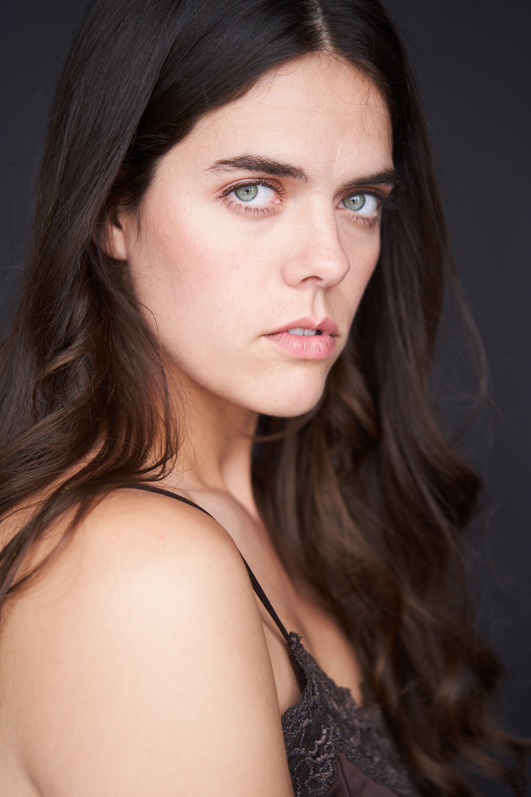
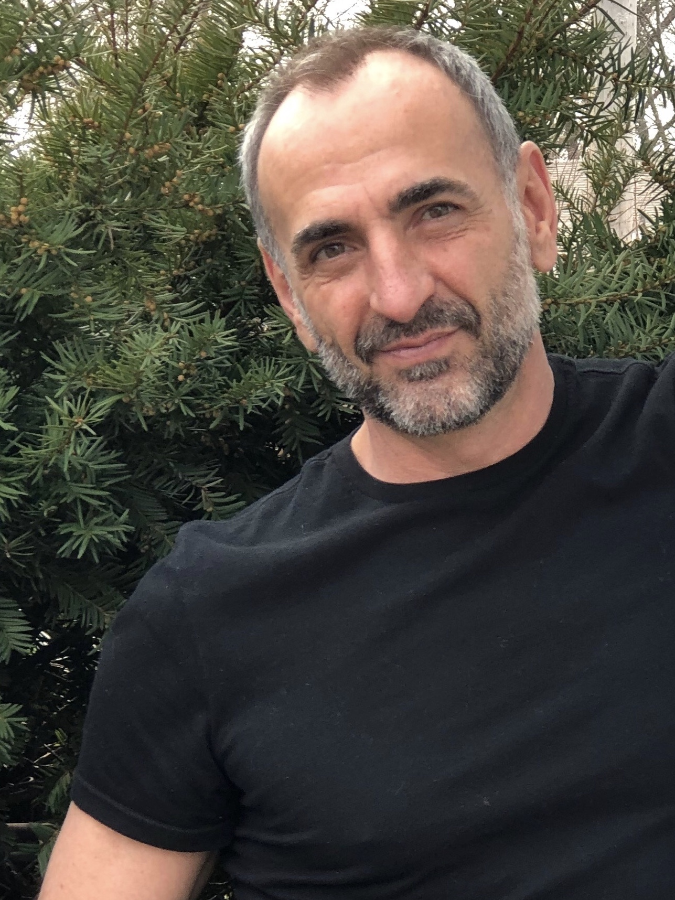
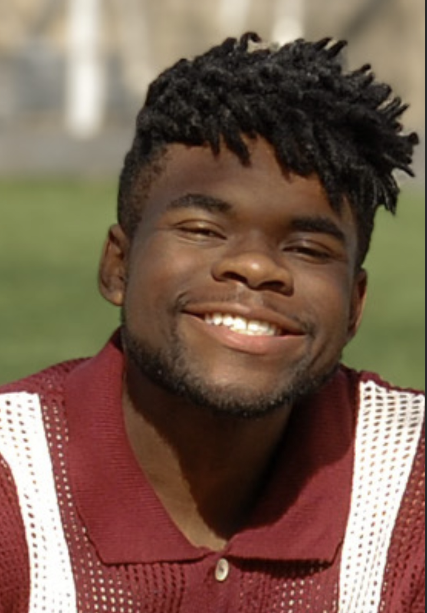
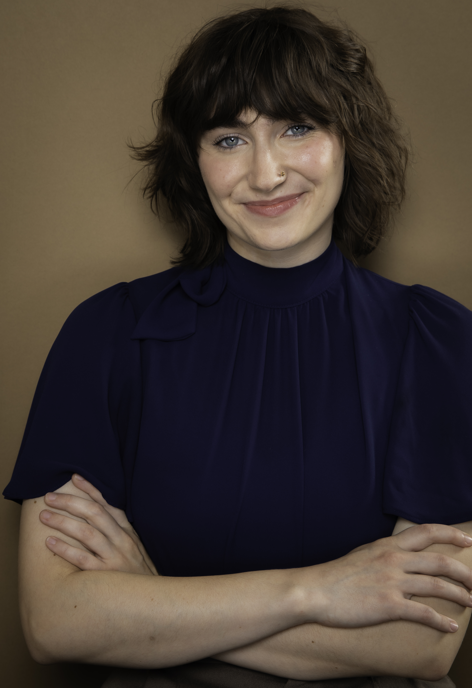

Cast
Ethan Lyvers
Rufus Putnum
Ethan Lyvers [he/him] Hailing from Putnam County WV, his recent credits include Drunk Shakespeare- Chicago, And Neither Have I Wings to Fly (First Folio Theatre), Cymbeline (Nashville Shakespeare Festival), and Julius Caesar (Houston Shakespeare Festival). On screen credits include “My Brother, My Brother, and Me” and modeling for “Grainger”. He holds a BFA from Marshall University and MFA in Acting from the UHPATP. Ethan can be seen this August in Greenbrier Valley Theatre’s production of Tuesdays with Morrie ! Instagram: @ethan.lyvers

Anna Caldwell
Abigail Worthy
Anna Caldwell (she/her) is a Chicago-based soprano and producer whose work spans opera, operetta, musical theater, and jazz. She has performed with Chicago Fringe Opera, The Savoyaires, The Gilbert & Sullivan Opera Company of Chicago, Actor's Moveable Theater and other companies throughout the Midwest. She is a co-founder of The Peppermint Patties, an award-winning vocal trio. Recent credits include Kate in Kiss Me, Kate and The Narrator in Joseph and the Amazing Technicolor Dreamcoat at The Peoples Bank Theatre. Favorite roles include Amalia in She Loves Me and Krysia in the Chicago premiere of Jake Heggie's Two Remain. A native of Athens, Ohio, Anna is thrilled to return to the Ohio River Valley for this special production. annacaldwellsoprano.com IG: @thesleepysoprano

Elena Musser
Pretty Shield
Originally from Pomeroy, OH, Elena is a Los Angeles based actor/singer/dancer. Recent credits include the feature film V/H/S/Halloween, the Skechers "Scary Fast" commercial, and several short films. Regional Theater: Saturday Night Fever and Young Frankenstein (Short North Stage), Death of a Salesman, Lady in the Moon (Los Angeles). Elena trained at the Neighborhood Playhouse in NY, the Groundlings, Beverly Hills Playhouse, and with Lesly Kahn in LA, and at the Ohio State University. She studies voice with Dianna Ruggiero. Elena is happy to be performing back home. “Thank you to my sweet family, friends, and boyfriend for your constant love and support!”
Chase Likens
Harman Blennerhassett
West Virginia native Chase Likens is thrilled to take part in the first ever staging of One Vote! Chase grew up performing, and has taken his talents from music stages to theatrical ones. You may have seen him on American Idol or heard his music, but his most notable acting roles include Mr. Wickham in Pride and Prejudice, Miles Gloriosus in A Funny Thing Happened on the Way to the Forum, and John Proctor in The Crucible.

Nolan Miller
Kit Putnam
Nolan Miller is a Marshall University graduate with a Regents Bachelor’s Degree and has studied voice under Dr. Alexander Lee for three years. Originally from Greenbelt, Maryland, Nolan moved to West Virginia at age 13 and has enjoyed performing in productions including Aida, The Little Mermaid, James and the Giant Peach, and Joseph and the Amazing Technicolor Dreamcoat. He is excited to continue growing as a performer and thanks everyone for supporting live theater.
Thaddeus Stambaugh
Ephraim Cutler
Thaddeus Stambaugh is a Senior in the Musical Theatre BFA program at Marshall University. He is excited for the opportunity to perform as Ephraim Cutler in One Vote! His previous credits include Rent (Roger), The Little Mermaid (Prince Eric), Much Ado About Nothing (Don Pedro), Mary Poppins (Bert), Next to Normal (Gabe), A Midsummer Night's Dream (Puck), and Rocky Horror (Dr. Frankenfurter). He would like to thank everyone for supporting live theatre and the arts!

Cate Wathen
Leah Cutler
Cate Wathen is excited to be joining the One Vote The Musical as Leah Cutler! From Newnan, Georgia, Cate is pursuing her BFA in Theatre Performance from Columbus State University in Columbus, GA. Credits include Sibella in A Gentleman’s Guide to Love and Murder, Portia in Something Rotten, and Cinderella in Into the Woods. She would like to thank her friends and family for all their love and support! She would also like to thank Ohio for welcoming her with open arms.
Joshua David Bonyak
Jervis Cutler
Joshua David Bonyak is thrilled to be part of this exciting new musical. A former Musical Theatre major at Ohio University and current Theatre major at Marshall University, Joshua has appeared in productions including Footloose (Ren), The Addams Family (Gomez), Disney’s Beauty and the Beast (LeFou), Big Fish (Will), and Clue (Mr. Green). He has also acted in films and earned recognition from the West Virginia Thespian Festival, International Thespian Festival, and West Virginia Theatre Association.

Josiah Baker
George Washington
Josiah Baker is going into his senior year with a theatre major at Marshall University, and a minor in dance. He is excited to start working professionally on this project and connecting more with his Ohioan roots.

James Hughes
Captain Pipe
James studied at Carnegie Hall, interned at Ensemble Studio and performed in several plays in NYC before moving home to Ohio. Some favorite roles: Brother Jody in Kiss, Jesus in Jesus Christ Superstar, Stanley in Streetcar Named Desire (Kahlil award), Hogan in Lost Lake, Adonis in Venus and Adonis, The Emcee in Cabaret (Kahlil award), Fagin in Oliver, and Dracula in Dracula, A Comedy of Terrors. James resided in Cutler, Ohio.
Quintin Steers
Cider Man
Quintin Steers has spent most of his life performing in ballets, musicals, and Shakespeare productions. He is excited to be part of this new work! When not onstage, he keeps himself busy through movement in all its forms. From indoor rock climbing to parkour to partner acrobatics, he stays active in every way he can. Quintin currently resides in Grand Rapids, Michigan.

Nic Franklin
Main
Nic Franklin is a musical theater student at Ohio University, playing Main in the upcoming production of One Vote! The Musical. His credits include Hair: The American Tribal Love-Rock Musical with Tantrum Theater, 35MM with The Abbey Theater of Dublin, the 2024 CAPA Marquee Awards at the Ohio Theatre, and serving as a soloist with the 2025 National Youth Choir at Carnegie Hall.
“This is an amazing show with an incredible cast and creative team, and I could not be more excited to collaborate with them. Thank you to the entire One Vote! team, and I hope you enjoy the show.”
Dan Porterfield
Jacob Goode
Dan Porterfield, freshman at Marshall University, is taking a stage role for the first time! He has previously done deck crew work for Marshall's production of Much Ado About Nothing. He would like to thank his professors and colleagues for their support and for encouraging him to take this amazing opportunity.

Rachelle Snyder
Margaret Blennerhassett & Sally Parker
Rachelle Snyder is a soprano from Zanesville, OH and performs in a variety of styles such as classical, musical theatre, and jazz. This past spring, they graduated with a B.A. in Music and B.S. in Communication Disorders from Marshall University, and will be pursuing their graduate degree in Speech-Language Pathology at the University of Cincinnati in the fall. Some past credits include Cabaret (Fraulein Kost/Fritzie), Little Women (Jo), Legally Blonde (Vivienne), and The SpongeBob Musical (Sandy).
Mike Murdock
Manasseh Cutler
Mike Murdock is a writer, actor, director and disposable hero from Chesapeake, Ohio. He has a BA from Marshall University and an MFA from the David Lynch School of Cinematic Arts. He is the Artistic Director of Alchemy Theatre in Huntington, WV, and a co-founder of The West Virginia Shakespeare Festival. He is also now a professor of Theatre and Film at Marshall. Mike is grateful for the opportunity to help create One Vote!
Instagram: @ALCHEMYTHEATRETROUPEWV and @WVSHAKES
Joniya Wiggins
Rose
Joniya Wiggins is so excited to be joining this cast as Rose, Wife & Cider Woman! Joniya is entering her senior year in Ohio University’s BFA Musical Theatre program. Her credits include Hair (Lincoln/Tribe), Inherit the Wind (Mrs. McClain), Rent (Mimi), and Three Sisters (Olga). She also assistant directed Bootycandy at Ohio University. She is more than thrilled to be spending her summer learning about Marietta!
Bailey Dore
Lucy Woodbridge
Bailey is a junior political science and theater double major at Marshall University. Her credits include Telly in Godspell, Anna of Cleves in Six, Cherry Valance in The Outsiders, Lucy Van Pelt in You’re A Good Man Charlie Brown, and multiple roles in Elf: The Musical. She also appeared in the ensemble of The SpongeBob Musical and as Penny in When We Were Young and Unafraid at Marshall. Bailey studies voice with Dr. Alexander Lee.
Seth Fearnow
Jeremiah Worthy
Seth Fearnow is a native Tennessean transplant who has lived in West Virginia for eight years. He has performed at Stuart Opera House and the Actors Guild of Parkersburg. Some of his favorite roles have been Bert in Mary Poppins, Mina / Jean Van Helsing in Dracula: A Comedy of Terrors, and Dave in The Full Monty. Seth could never have performed in so many shows without the support of his wife, Morgan Stubbe-Fearnow, and their two children.